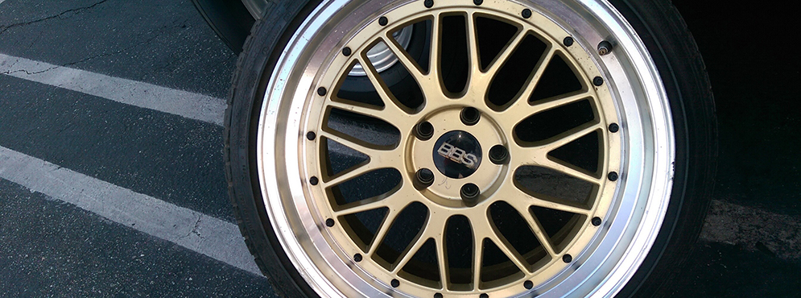
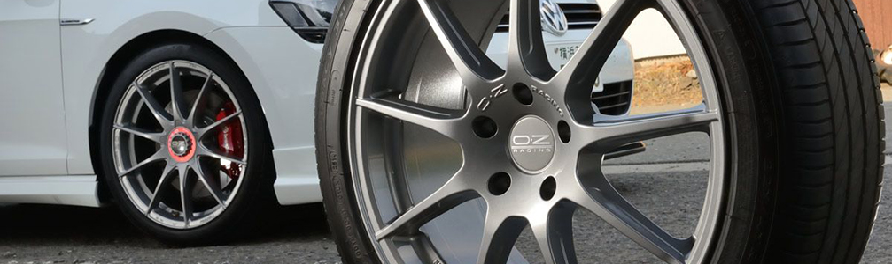
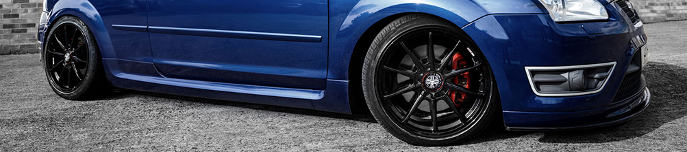

ALLOY MODS
The Appreciator Of Alloys & Their Modifications
Showcased are various different types of Alloys which will potentially fit your Ford. As you are all lovers of your Fords, you know how much of a difference a good set of alloys will do to your car. The alloys are the limelight of your car which is why they are quite possibly the most important exterior modification you could do- whether its a standard refurb, or a brand new set of gleaming alloys, they will make the difference.
You don't have to spend thousands upon thousands of pounds to get a clean set of alloys for your Ford. If you have a set of beat up ones then why not give them a refurb? A hot cup of tea, sanding paper and a few cans of paint will do the job! Or, if you want to go the extra mile though, there are multiple Aftermarket Alloys on the market; just make sure the Width, Diameter, Bolt Pattern and Offset are suitable for your car.
There are multiple different accessories which can come together to make your cars alloys look car show ready and catch the eye of any Ford lover. Represented are Ford Owners alloys where you can gain knowledge, find shops to purchase products and preview other owners shoes.
The Changes
This is an extensive list of components changed during the block mod process, the process is normally a full days work and for piece of mind all components are replaced with high quality Volvo components:
- Stainless Steel Shims x4
- Ford Head Gasket x1
- Both aux belts x1
- Ford Cambelt x1
- Cambelt Tensioner x1
- Cambelt Pulley x1
- Turbo Coolant/Oil Feed Washers*
- OEM Camshaft seals x2
- OEM Turbo manifold gasket x1
- Coolant change x1
- Oil and filter change, Castrol Edge 0W 40 x1
- Water pump replaced x1
- Head bolts replaced x1
- Variable cam seals replaced x2
- Outer spark plug seals replaced x5
The process is then finalised by completing a smoke test and full OBD diagnostic.
Professional and Personal Refurbing
There are multiple steps to Refurbing your alloys personally, its a long winded process but so worth it in the end. A lot of tools, products and sweat and tears will go into this which can be purchased at any local trade store. Your preperation stage in the most important part of the refurbing process so making sure you have the right products is important such as; bucket and sponge, detergent, wet and dry paper, file, filler, spray filler, flat head screwdriver, thinners and cloths. As we want to give you the best advice, followed are step by step videos which should help you prepare and create your dream alloys. Remember, this process is not for the faint hearted.
If you want to save some time, there is always the option of professional refurbing. There are multiple places around the West Midlands that can do this for you. Concluding reviews and seeing the results of some of the alloys which come out of this place, JP Alloys is one of the best refurb companies out there and are located as shown below:
JP Alloys Ltd, Unit 3, Virage Park, Bridgtown, Cannock, WS11 0NH" I WANT SOME NEW SHOES "
-
directions_carBBS Alloys
BBS was founded in 1970 by Heinrich Baumgartner and Klaus Brand in Schiltach in the Black Forest. Plastic auto body parts were initially manufactured at the plant until 1972, when an innovative three-piece motorsports wheel was designed there. This strongly positioned the company in the motorsports sector. The company celebrated its 25th anniversary in 1995, at the time when Michael Schumacher won the Formula 1 World Championship for the second time with Benetton Renault on BBS wheels. From all this success, the company are now one of the most popular manufactures of mint aftermarket alloys suitable and adaptable to your Ford. BBS produce some of the most spectacular looking alloys, have a look here.
-
local_taxiOZ Racing Alloys
OZ was established in 1997; a passion for wheels has driven it to become a legend in the automotive world. OZ produces alloy wheels for the top automotive markets, such as: racing (F1, Rally, DTM, Indy..), aftermarket, motorcycle and OEM with special equipment for the most exclusive automobiles. OZ meets the special requirements of prestigious automotive manufacturers such as Ferrari, Lamborghini, Maserati, Aston Martin, Lotus and McLaren. OZ has been a part of Formula 1 since 1985, and the WRC since 1988; and has amassed more than 150 winning titles. Today, OZ is the brand most often found on race cars. You can look at some of these insane alloys here.
-
local_car_washWolfrace Alloys
The Wolfrace brand was created in 1971 with the launch of the new Slot Mag alloy wheel. An innovative company, Wolfrace Wheels (UK) Limited was the first European company to launch polished alloy wheels into the marketplace. Throughout our 45 year history, the brand has been synonymous with high quality, affordable, industry leading fashion conscious products, ranging from (in the early days) classic alloy wheels and vehicle racing seats, to the current range of stylish alloys. Always at the forefront of manufacturing and quality control techniques, currently Wolfrace is the only UK based alloy wheel brand able to offer a 5-year warranty on selected standard finish alloy wheels, which is quite convincing, don't you think?! You can view there alloys here.
Not only do you have the brands shown above, there are so much more out on the market, you just have to find the right ones for you.